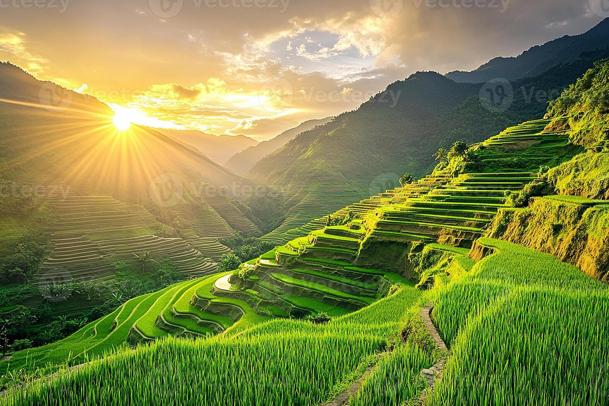
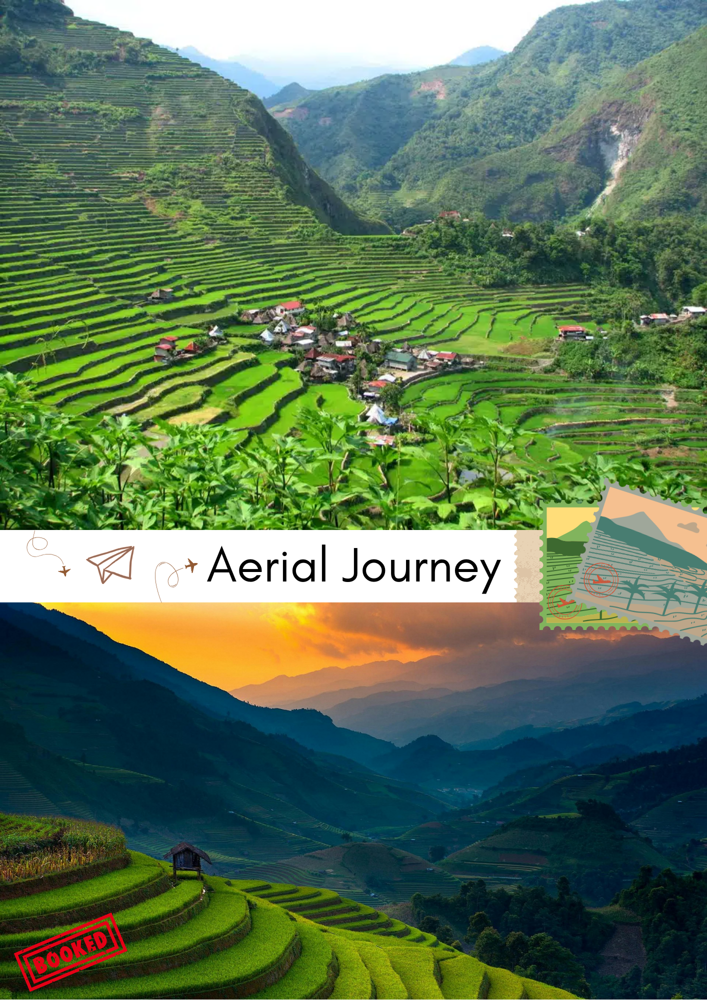
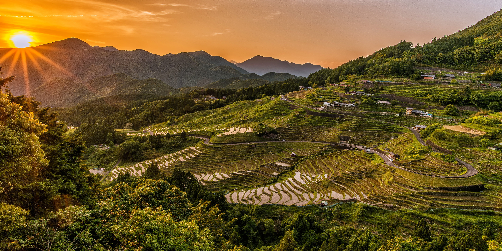

Banaue Rice Terraces

Step into a living testament to Filipino ingenuity! The Banaue Rice Terraces are over 2,000 years old, carved into the mountains by ancient hands. Marvel at the lush green steps cascading down the Cordillera mountain range, a UNESCO World Heritage Site. It's a place where nature and culture unite, offering hiking trails, cultural villages, and breathtaking views that will leave you in awe. Don't miss this masterpiece of harmony between mankind and nature!

